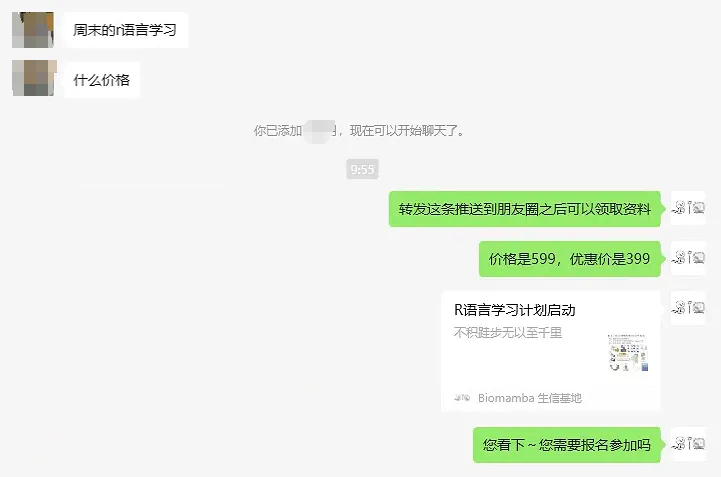
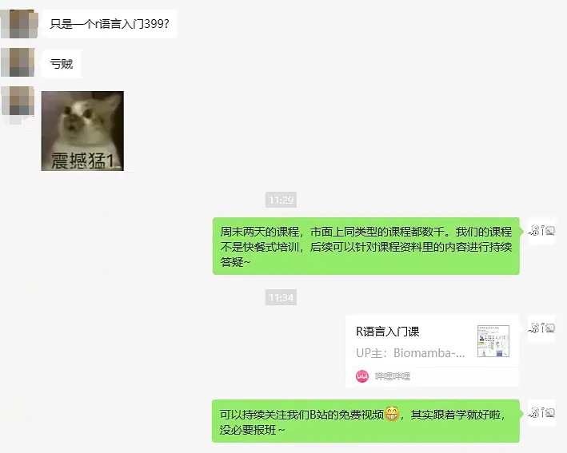

生信技能培训还比不上小学生作业辅导吗？
原文：https://mp.weixin.qq.com/s?__biz=MzAwMzIzOTk5OQ==&mid=2247527806&idx=2&sn=4b2a7ee24a75969b069c1fa19802f1a9&chksm=9b3c142eac4b9d38c8e226bfa3a9d47c5faea3e1f60cb61fa0c880d3352cdffff6f404651388#rd 合集：漫谈胡侃
昨儿又开展了一轮R语言课程报名：两天入门R语言，周末开讲。有个比较有意思的事情，粉丝觉得我们教两天R语言并且附带后续答疑，399太贵了，很亏。其实他说的也对，为了分析好老板丢过来的数据，花几百块报名课程确实不便宜、也不值。但是反过来一想，我给你四百块，让你给我介绍一个领域的课程两天，还要附带课程答疑，又有多少人会愿意承接呢~事实是三四线城市的小学生作业辅导，两天都不止这个价。再者说，我们公众号更新了几百篇免费的生信教程(Biomamba生信基地全内容索引)，咋没有人替我喊亏 ，其实换个视角，很多事情都能想得通。相较于市面上一大把数千块的生信快餐，两天课程一讲完就结束服务，卷铺盖相忘于江湖；我还是不得不说一句，Biomamba生信基地还挺良心的。你看到的只是你付出了几百块的学习成本，而我们的工程师为了这次的课程准备了一个月有余，算上我们的场地、客服对接、计算设备等成本，单次培训的固有成本就在3w。更不要说我们后期还要安排人员来完成答疑服务。也就是说，我们要至少招75个学员才能维持成本。但即使说不能维持开支，我们也会把这些课程开设下去，就像我们的十小时学会Linux，其实有损我们的日均阅读量，但是我们也仍然坚持了下去，因为需要的人真的会很需要，而市面上又没有类似的课程，这些才是我们这些媒体人应该做的事情。当然，我们也一直不忘初心，B站的R语言课程我们也会一直免费更新，欢迎大家follow：https://www.bilibili.com/video/BV1miNVeWEkw/。
，其实换个视角，很多事情都能想得通。相较于市面上一大把数千块的生信快餐，两天课程一讲完就结束服务，卷铺盖相忘于江湖；我还是不得不说一句，Biomamba生信基地还挺良心的。你看到的只是你付出了几百块的学习成本，而我们的工程师为了这次的课程准备了一个月有余，算上我们的场地、客服对接、计算设备等成本，单次培训的固有成本就在3w。更不要说我们后期还要安排人员来完成答疑服务。也就是说，我们要至少招75个学员才能维持成本。但即使说不能维持开支，我们也会把这些课程开设下去，就像我们的十小时学会Linux，其实有损我们的日均阅读量，但是我们也仍然坚持了下去，因为需要的人真的会很需要，而市面上又没有类似的课程，这些才是我们这些媒体人应该做的事情。当然，我们也一直不忘初心，B站的R语言课程我们也会一直免费更新，欢迎大家follow：https://www.bilibili.com/video/BV1miNVeWEkw/。

